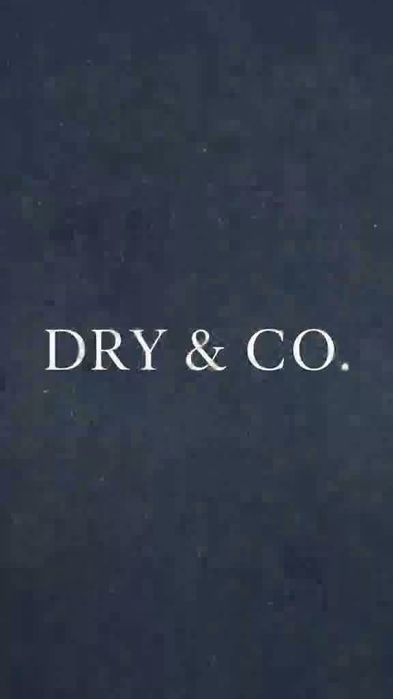

01
Dry Ritual
Robes and towels for the after-swim, after-rain, after-beach moment — the one Milo never let us skip.
Shop Dry RitualThis brand did not start as a business plan. It started with a Labrador who loved water more than sense — and a house that went too quiet when he left.

Milo was the kind of dog who arrived in a room before his body did — tail first, smile second, muddy paws always last. He swam in farm dams like they owed him something. He shook water across white walls and never apologised. After every swim, someone would laugh, grab whatever towel was closest, and try to get him dry before he claimed the sofa.
Those towels were never enough. He would still leave a cold, damp patch where he slept. At the time, it was only a joke in the house: “We need something better for this dog.”
In his last winter, the swimming stopped. The walks got shorter. One grey Cape afternoon he stood in the rain like he was waiting for his old body to remember how to be young. When they brought him inside, he was shivering in a way that had nothing to do with play.
They wrapped him in the same old towel. It smelled of him and detergent and every weekend that had come before. He looked up once — that soft Labrador look that asks for nothing and somehow asks for everything — then rested his head on someone’s knee and went still enough that the whole house heard it.
Milo did not make it through that week.
What remained was ordinary and unbearable: his bowl still by the door. A lead hanging where no one had the heart to move it. A damp towel on the washing line that nobody wanted to take down, because taking it down felt like admitting he was really gone.
Grief is strange. One day you are choosing a better drying robe for a living dog. The next, you are holding fabric that still smells like him and wondering how a house can be so full of things and so empty at the same time.
dry&co was born in that quiet — not to replace Milo, and never to sell sadness — but to honour what he made obvious: dogs deserve warmth, dignity, and pieces that belong in the home the way they belong in our lives.
Every robe, blanket and leather lead we make carries that promise. Get them dry. Keep them held. Make the ordinary moments feel worthy of the short, bright years we get with them.

“We still leave a little space on the sofa. Some loves do not move out — they just change shape.”For Milo · dry&co
Quiet luxury with a reason. Local leather and sewing where we can. Beautiful things for dogs who are still here — and for the people who know how quickly “still here” can change.
Robes and towels for the after-swim, after-rain, after-beach moment — the one Milo never let us skip.
Shop Dry RitualCollars and leads meant for the long, ordinary walks that become the ones you remember.
Shop Leather WalkBeds and blankets soft enough for grief days and bright enough for the dogs who sleep there now.
Shop HomeLocal sewing, leather and careful supply — a brand that remembers why it started.
Talk to usOn every hero piece: a tan leather patch with DRY & CO. — simple, quiet, permanent.
Dry, because that was the first care we ever tried to give him. & Co., because love is never only one person and one dog. It is a household. A habit. A second chance for the next wet, muddy, living thing that finds your door.
Shop the collection